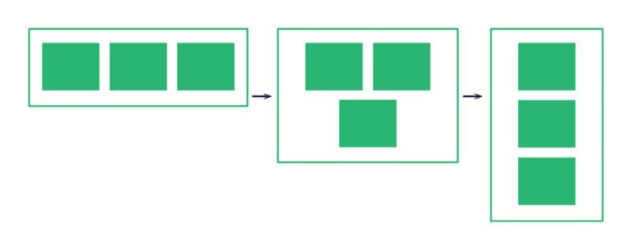
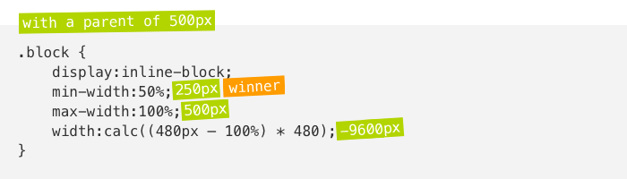
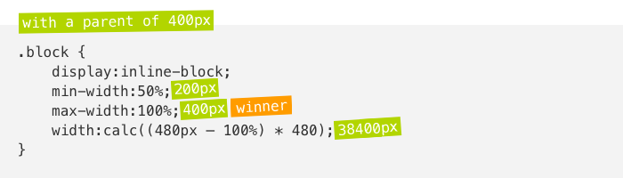

一般来说，我们用媒介查询(Media Queries)来构建响应式邮件设计。但是最近我发现另一种可以构建响应式设计的方案，通过使用CSS的calc()技术与其他三个宽度属性：width、min-width、max-width。
问题
创建响应式邮件应用很困难，特别是一些手机客户端应用不支持媒介查询。使用hybird、Gmail邮件应用或者不通过媒介查询来构建响应式邮件设计是三种可选方案。
我最近正在研究第三种方案。一开始我给div元素设置fixed width并且设置display属性为inline-block。一旦屏幕可以容纳两个以上的块，它们将会自然的排列下去，但是我还是遇到了问题。
一旦所有的块开始层叠了，它们就不能占满屏幕宽度。

我花了很长一段时间去寻找解决这个问题的方案，Flexbox是一个不错的建议，但不幸的是，电子邮件对Flexbox的支持很差。
一种解决方案
记住width、min-width、max-width
紧接着calc()函数，我在这个方案中引入了三个CSS属性。为了更好的理解它是怎么工作的，我们先来回顾下width、min-width、max-width同时使用时在前台页面中是如何表现的。
- 如果width属性值比max-width大，max-width属性生效
- 如果min-width属性值比width或者max-width属性值大，则min-width属性生效
你先猜猜下面这个盒子的样式，宽度会是多少？1
2
3
4
5.box {
width:320px;
min-width:480px;
max-width:160px;
}
答案：盒子宽度将会是480px
calc()
不再啰嗦，下面演示如何用这种方案创建在宽度屏幕宽度小于480px的情况下会自动堆积为两列。1
2
3
4
5
6.block {
display:inline-block;
min-width:50%;
max-width:100%;
width:calc((480px — 100%) * 480);
}
我们一个个分析这几个属性。1
min-width:50%;
min-width属性定义的列宽可以让我们在桌面端使用，我们可以改变这个值来添加更多的列，如：改变为25%来显示四列，或者用fixed pixed宽度来设置列宽属性。1
max-width:100%;
max-width属性定义的列宽可以让我们在手机端使用，由于设置为100%，每列宽都将自适应，撑满容器的宽度。我们也可以改变属性值来在手机端显示多列。1
width:calc((480px — 100%) * 480);
多亏了calc()函数，可以给width属性变魔法。值480是我们希望的转换点，值100%表示父容器的宽度，计算的结果为一个比max-width更大或者比min-width更小的值，因此这两个属性中的一个一定会生效并取代width属性。下面是两个例子：

父元素宽度500px的情况下，计算出来的宽度为-9600px，比min-width要小，因此min-width生效，宽度为50%，呈现两列布局。

父元素宽度400px的情况下，计算出来的宽度为38400px，远比min-width大，但max-width比它小，因此max-width生效，呈现单列布局。
支持情况
在浏览器端，IE9已经开始支持calc()函数。而且在电子邮件客户端，calc()函数也得到了良好的支持。同时，在Apple Mail(IOS/OS X)、Thunderbird、Outlook(IOS/Android apps)、Gmail(webmail/IOS/Android apps)、AOL(webmail)和老的Outlook.com也能生效。
老的Outlook.com
Outlook.com有一点小瑕疵，就是在calc()函数中会过滤每一个包含括号的属性。这就意味着，支持“calc(480px-100%)”，但不支持calc((480px-100%)*480)。因此我们需要像下面这样改变写法来支持老的Outlook.com：1
width:calc(480px * 480 — 100% * 480);
不支持的客户端
calc()函数在一些老的电子邮件客户端像Lotus Notes及最新Windows版本的Outlook是不被支持的。同时，在Outlook Web App和Yahoo也不被支持。这些应用中的calc()函数将会被忽略掉。
让步(兼容处理)
在这种情况下，我建议使用fixed width引入一些自定义属性来兼容那些不支持calc()函数的客户端。为了在这些客户端隐藏这几个属性，尽管可能不会生效，我还是建议用calc()函数，下面是第一个例子：1
2
3
4
5
6
7
8.block {
display:inline-block;
min-width:240px;
width:50%;
max-width:100%;
min-width:calc(50%);
width:calc(480px * 480 — 100% * 480);
}
Outlook Web App
然而，Outlook Web App(包括Offiec 365及新的Outlook.com)还有一个自带的小瑕疵。当calc()函数包含乘法(*)，新的Outlook.com及Office 365将会删除整个对应的内联样式属性。这就意味着我们需要手动计算乘法，并使用计算后的结果。下面是在480px转折点计算乘法后的结果：1
width:calc(230400px — 48000%);
WebKit前缀(WebKit Prefixes)
老版本的Android(<Android 5.0)及IOS(<IOS 7)需要加上WebKit前缀以生效。因此我们最终的结果如下：
.block {
display:inline-block;
min-width:240px;
width:50%;
max-width:100%;
min-width:-webkit-calc(50%);
min-width:calc(50%);
width:-webkit-calc(230400px — 48000%);
width:calc(230400px — 48000%);
}
缺点及最后的想法
就像在电子邮件开发世界中的任何一件事物一样，上述方案并不完美。下面是一些我能想到的一些局限性：
- 在Yahoo上不管用。其桌面端支持媒介查询，因此我们可以稍加改进，让手机端应用优先，并且在桌面端应用中加入媒介查询来巩固它。
- 只能设置一个转折点。
- 你只能从桌面版减少列数到手机版，你不能从四列布局的手机版到单列布局的桌面版，虽然这种情况很少见。
- 最终的写法很难阅读。使用预处理器和mixin生成所有必需的属性可能会有用的多。
不过，我依然认为这个方案在很多情况下会很方便。特别是针对优化Gmail。当然我也确信有很多网站上正在使用的实例。(像小部件、广告等等…)
并且我也迫不及待的想看到这种方案会给你的设计激发怎样的灵感。
(本文译自：The Fab Four technique to create Responsive Emails without Media Queries)
 ☜☜☜ wechat 『『『 reward 点击扫码打赏 ~~~ ^_^ 』』』alipay ☞☞☞
☜☜☜ wechat 『『『 reward 点击扫码打赏 ~~~ ^_^ 』』』alipay ☞☞☞